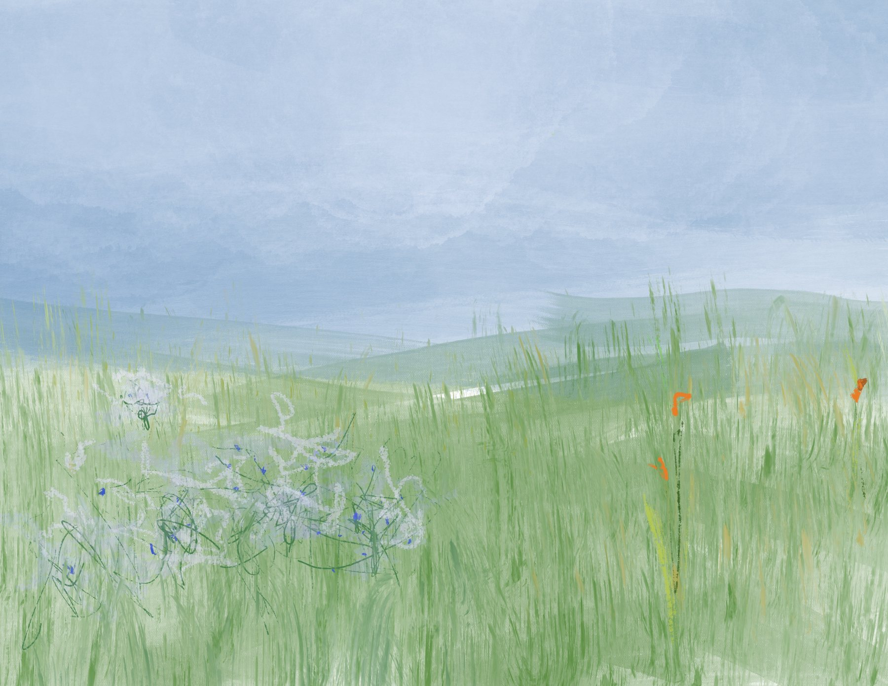

Digital Paintings
Landscapes
Finished atmosphere studies using terrain, weather, shoreline, trees, and architecture as color and spatial mood studies.




Digital Paintings
Finished atmosphere studies using terrain, weather, shoreline, trees, and architecture as color and spatial mood studies.
